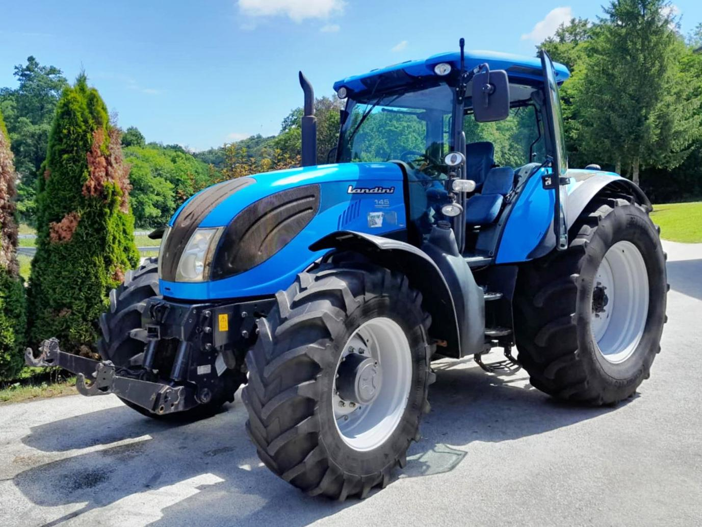

Landini Landpower 145

Landini Landpower 145 – це найпотужніша модель у лінійці Landpower, яка ідеально втілює концепцію «максимум тяги – мінімум електроніки». Завдяки великому об'єму двигуна та механічному впорскуванню пального, машина демонструє вражаючу стабільність під великим навантаженням і високу стійкість до перевантажень.
Ця модель є справжньою знахідкою для господарств, які шукають потужну машину для важкого обробітку ґрунту (оранка, культивація), але хочуть уникнути складних електронних систем. Трактор має посилену механічну трансмісію Speed Six та потужну задню навіску вантажопідйомністю до 8400 кг. Велика колісна база та солідна власна вага забезпечують відмінне зчеплення з ґрунтом, а простора кабіна з кондиціонером та ергономічним розташуванням важелів дозволяє оператору працювати ефективно протягом усього дня.
| Параметр | Значення |
|---|---|
| Клас тяги | 3.0 |
| Тип ходової частини | колісний |
| Колісна формула | 4х4 |
| Тип рами | жорстка конструкція |
| Основне призначення | важка оранка, робота з широкозахватними агрегатами, глибоке розпушування |
| Параметр | Значення |
|---|---|
| Модель | FPT (Fiat Powertrain) NEF 67 (Tier 3) |
| Тип двигуна | 6-циліндровий, дизельний, з турбонаддувом та інтеркулером |
| Спосіб охолодження | рідинне |
| Розташування циліндрів | рядне, вертикальне |
| Робочий об’єм | 6,7 л (6728 см³) |
| Номінальна потужність | 104,0 кВт (141,0 к.с.) |
| Максимальний крутний момент | 590 Н·м (при 1400 об/хв) |
| Номінальні оберти | 2200 об/хв |
| Очищення вихлопних газів | внутрішня рециркуляція (без AdBlue/DPF) |
| Питома витрата (оптимальна) | 208 г/кВт·год |
| Параметр | Значення |
|---|---|
| Тип КПП | механічна синхронізована Six-Speed |
| Кількість передач | 18 вперед / 18 назад (3 діапазони х 6 передач) |
| Діапазон швидкості вперед | 1,4 – 40,0 км/год |
| Діапазон швидкості назад | 1,4 – 40,0 км/год |
| Тип зчеплення | сухе, багатодискове, з гідравлічним приводом |
| Вал відбору потужності (ВВП) | 540 / 1000 об/хв |
| Діапазон | Передача | Передаточне число (iΣ) | Швидкість (Vt), км/год | Тягове зусилля (Pmax), кН |
|---|---|---|---|---|
| L (Low) Низький | 1 | 472,5 | 1,47 | 52,5 |
| 2 | 384,1 | 1,81 | 50,2 | |
| 3 | 312,3 | 2,22 | 46,5 | |
| 4 | 253,9 | 2,74 | 39,8 | |
| 5 | 206,4 | 3,36 | 32,5 | |
| 6 | 167,8 | 4,14 | 26,4 | |
| M (Medium) Середній | 1 | 158,2 | 4,39 | 24,8 |
| 2 | 128,6 | 5,40 | 20,2 | |
| 3 | 104,5 | 6,65 | 16,4 | |
| 4 | 85,0 | 8,17 | 13,3 | |
| 5 | 69,1 | 10,05 | 10,8 | |
| 6 | 56,2 | 12,35 | 8,8 | |
| H (High) Високий | 1 | 51,8 | 13,41 | 7,9 |
| 2 | 42,1 | 16,50 | 6,4 | |
| 3 | 34,2 | 20,30 | 5,1 | |
| 4 | 27,8 | 24,98 | 3,8 | |
| 5 | 22,6 | 30,73 | 3,0 | |
| 6 | 18,4 | 37,73 | 2,2 |
| Параметр | Значення |
|---|---|
| Тип коліс | пневматичні шини |
| Шини передні (стандарт) | 420/85 R28 |
| Шини задні (стандарт) | 520/85 R38 |
| Радіус ведучого колеса (заднього) | 0,915 м (Rw) |
| Кліренс (дорожній просвіт) | 530 мм |
| Передній міст | посилений, з жорстким підключенням (Spring-On) |
| Режим роботи | Витрата, л/год |
|---|---|
| Важкі польові роботи (оранка 5-корпусним плугом) | 22,5 – 26,0 л/год |
| Глибоке розпушування (чизелювання) | 23,0 – 27,5 л/год |
| Середні польові роботи (посів широкозахватними комплексами) | 16,0 – 19,5 л/год |
| Легкі роботи (культивація, борування) | 11,5 – 14,0 л/год |
| Транспортні роботи (магістральні переїзди) | 9,5 – 12,5 л/год |
| Холостий хід (зупинки, робота ВВП без навантаження) | 1,5 – 2,0 л/год |
| Параметр | Значення |
|---|---|
| Експлуатаційна (робоча) вага | 5650 кг (без баласту) |
| Максимально допустима вага | 9000 кг |
| Довжина / Ширина / Висота | 5330 / 2400 / 2880 мм |
| Колісна база | 2730 мм |
| Об’єм паливного баку | 180 л (опція 280 л) |
| Параметр | Значення |
|---|---|
| Гідравлічна система | шестеренний насос, 66 + 29 л/хв |
| Вантажопідйомність навіски | 7000 кг (з двома циліндрами) |
| Керування | повністю механічне (важелі) |
| Особливості | Найбільш "аналогова" модель у серії. Відсутність складних електронних блоків робить трактор ідеальним для роботи у важких умовах з мінімальним сервісом. |